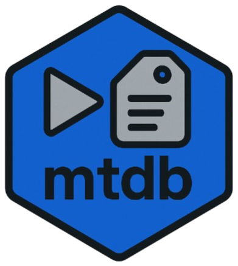

LOCAL-FIRST METADATA FRAMEWORK
MetaTagDB
MetaTagDB is an open metadata framework for auto-tagging, categorizing, fingerprinting, and analyzing video libraries. It’s local-first, extensible with AI modules, and supports deep metadata synchronization.
TAG // FINGERPRINT // CATEGORIZE
Local video/audio/image library records
LOCAL FIRSTSHA-256dHASHJSON/CSV
No files loaded.
Records0
Total bytes0
Unique tags0
Visual fingerprints0
| Name | Type | Bytes | Duration | Dimensions | SHA-256 | dHash |
|---|